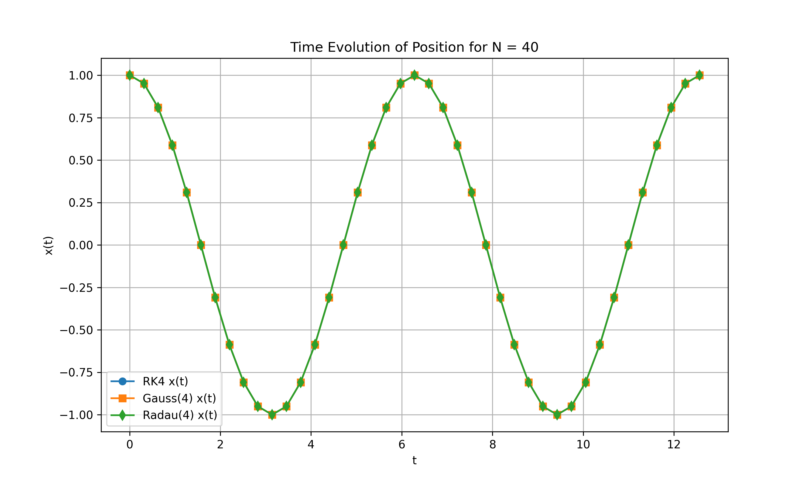
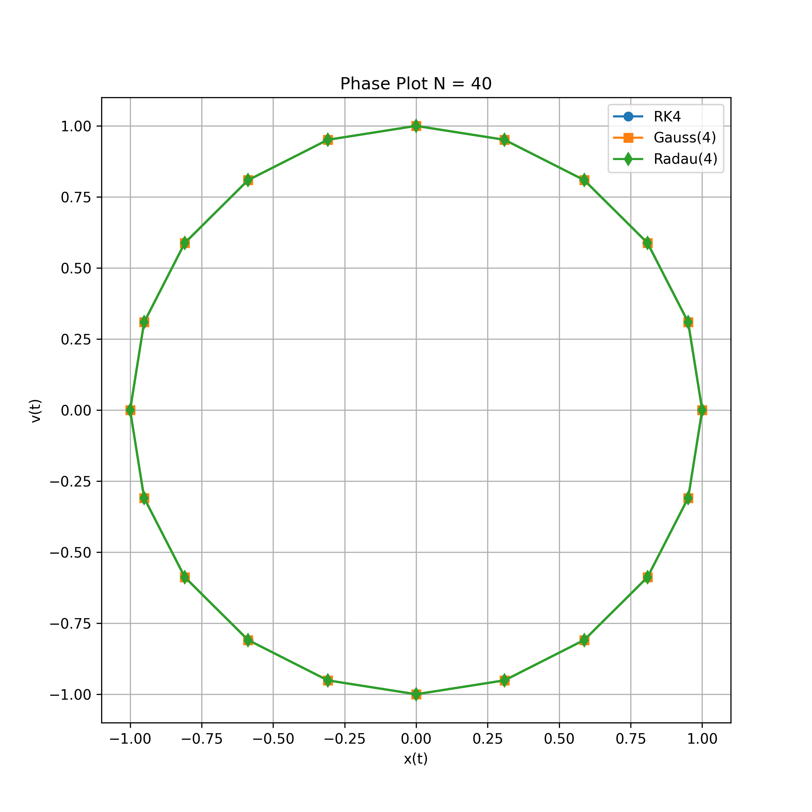
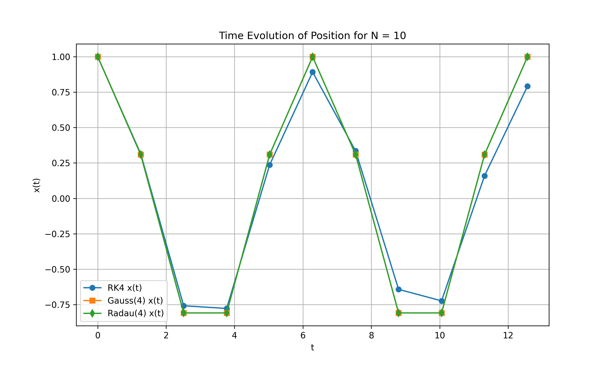
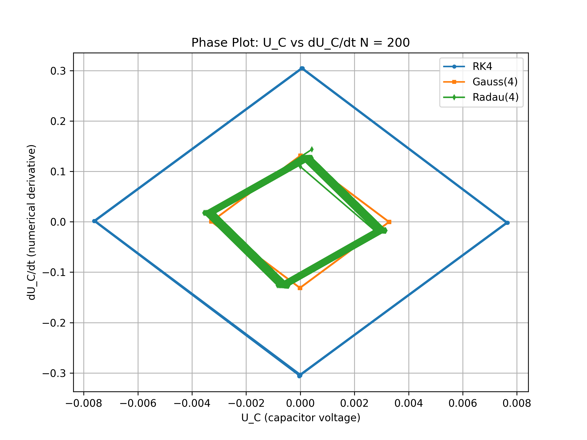
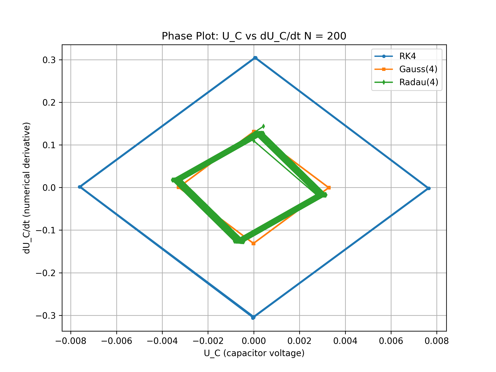
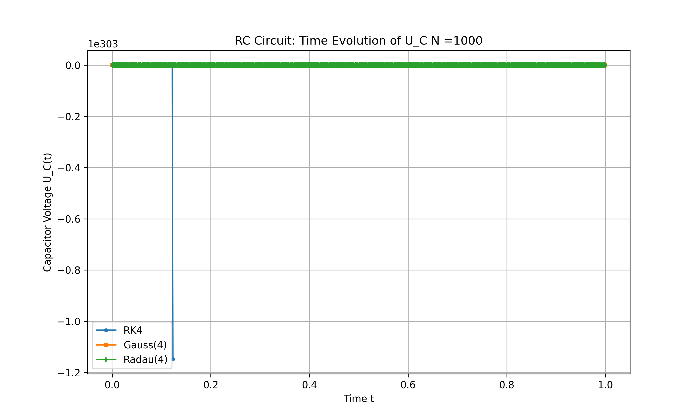
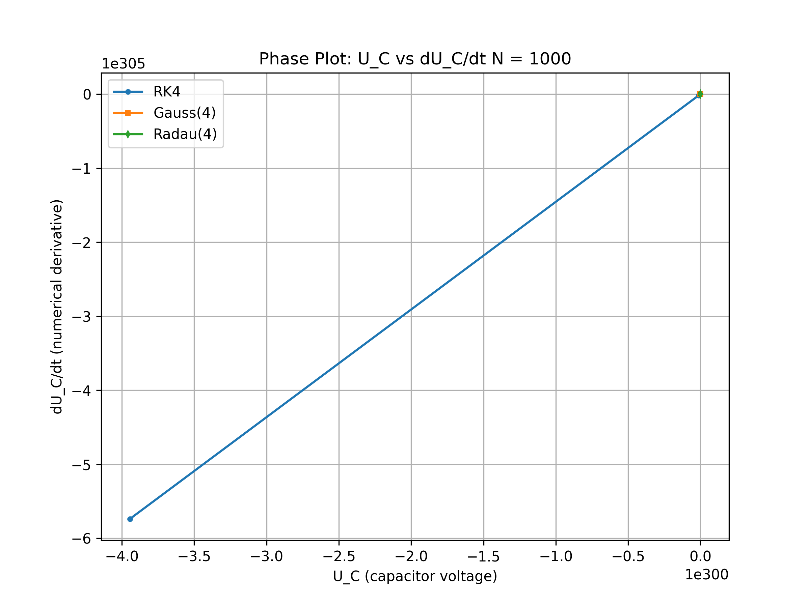
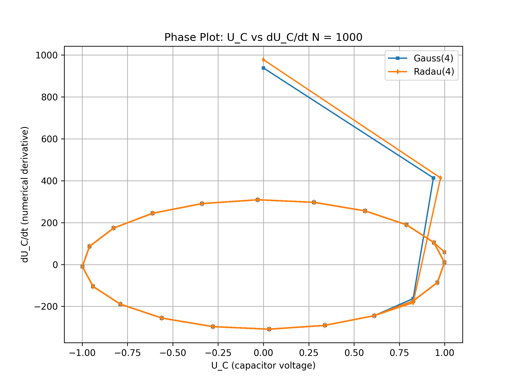
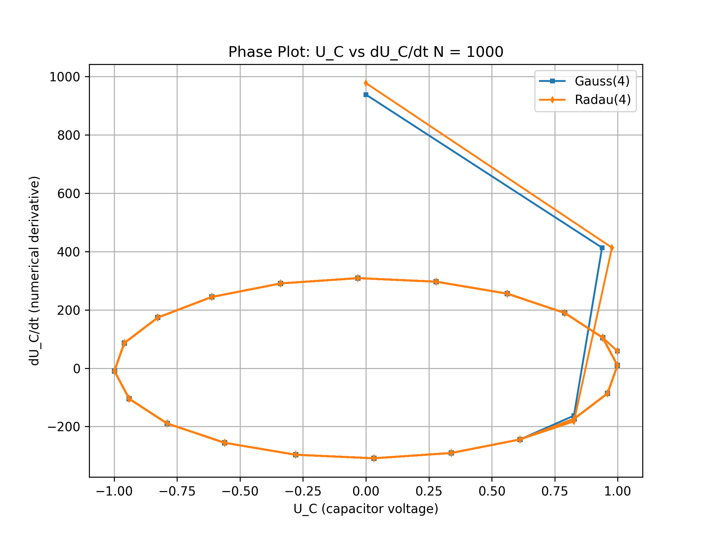
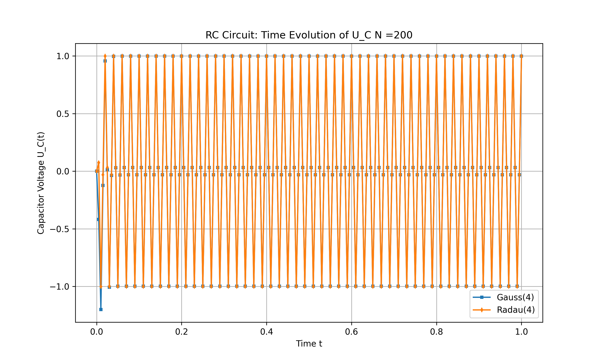

Runge Kutta#
In this section we will now investigate the implementation of 3 different Runge Kutta Schemes for the past problems as the Mass Spring and the Electric Circuit models. In general, all the methods that were already discussed, as the Explicit/ Implicit Euler and also the improved Euler as well as the Crank Nicolson method, can be formulated as Runge Kutta methods. They have convergence order 1 and 2. Therefore we aim to investigate higher order methods. In Runge Kutta methods, each time step is divided into an amount of stages m and therefore each time steps is resolved at a higher accuracy which depends on the number of stages. For convergence, there are different rules regarding the method. For explicit Runge Kutta schemes there exists the rule that the order of convergence \(p leq m\). However for \(m \beq 5\) it has not been possible to recover \(p=m\). Therefore, a very popular method is the Runge Kutta 4 Explicit which has order 4 convergence. In general the order of convergence is equivalent to the order of accuracy of the numerical integration. Therefore, for implicit methods, it becomes clear, that choosing Gauss integration methods will leas to the highest convergence rates of order \(p=2m\). For implcit RK methods the rule is \(p \leq 2m\). Another popular method is the Radau method, which has oder \(p = 2m-1\), where the last coefficient \(c_m =1\) is fixed. Therefore we chose to investigate the following three methods:
Runge Kutta 4 Explicit - p = 4
Gauss Method m = 4 - p = 8
Radau Method m = 4 - p = 7
We expect accurate solutions for larger time steps already, as well as for the stiff problem, we expect exploding solutions for the explicit method.
Mass Spring Model
40 time steps
 {kind=link}
{kind=link}
20 time steps


10 time steps
{kind=link}

As expected, we see already for very large time scales, that the oscillations of the system are represented quite well and for N = 40, we already get perfect circles for the phase plot. This is due to higher convergence rates. For the largest time step, we can also see difference in the lower order method of the Explicit method, that shows less accurate behavior.
Now we look at the Electric Circuit model. Again we start by choosing \(R=C=1\) and we expect similar behavior to the one observed by the implicit Euler, where the transient solution will disappear after a few seconds.
200 time steps
 

{kind=link}
500 time steps


We see, for the larger time step, the exponential decay is not visible and the RK4 method gives higher amplitudes. For smaller time steps, we see already accurate solutions as the exponential decay is visible.
Now we will look at the stiff Problem. Again we expect exploding solutions for the RK4.
1000 time steps
 {kind=link}
{kind=link}
1000 time steps
 

{kind=link}
200 time steps
{kind=link}

We observe exploding results of the explicit method and accurate results for the implicit methods already for larger time steps. For N = 1000, we see very accurate behavior. To conclude, we can say, that choosing higher order Runge Kutta Methods is recommended due to its higher convergence rates. For non stiff problems and a sufficient time step, the RK4 gives already very accurate solutions and might be preferred due to its lower computational costs compared to the implicit methods. However, for stiff problems, one should always choose an implicit method due to stability.